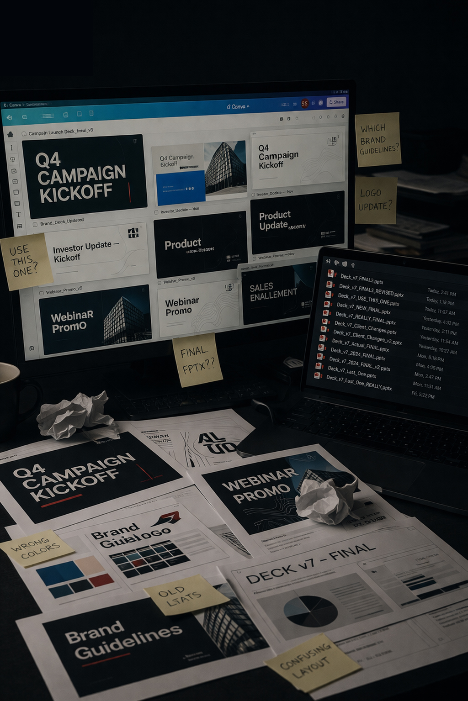

System 01
Fixing messy Canva and presentation ecosystems
Problem
Content lives across Canva, PowerPoint, and shared folders. Templates do not match. Teams create their own versions. Nothing aligns.
System built
- Unified template system across tools
- Shared layout and hierarchy rules
- Repeatable formats for key content types
- Simple usage logic teams actually follow
Outcome
- Consistent output across tools
- Fewer versions and rework
- Faster content creation
- Less dependency on design
Related work: ArisGlobal / Breakthrough Conference
How to fix messy Canva systems